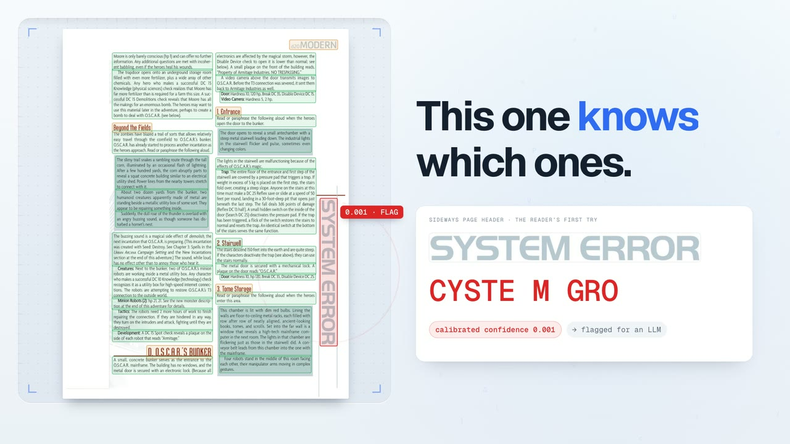
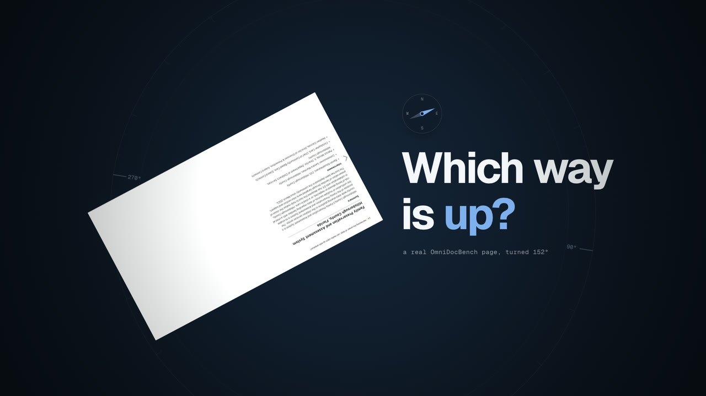
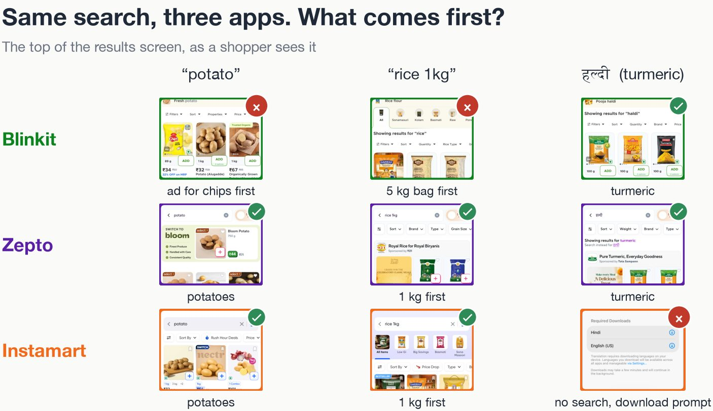
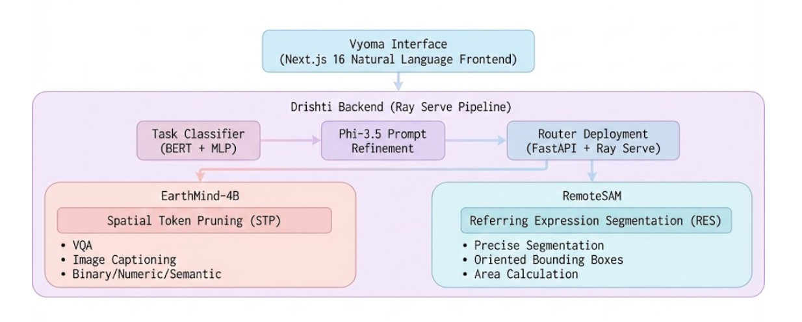
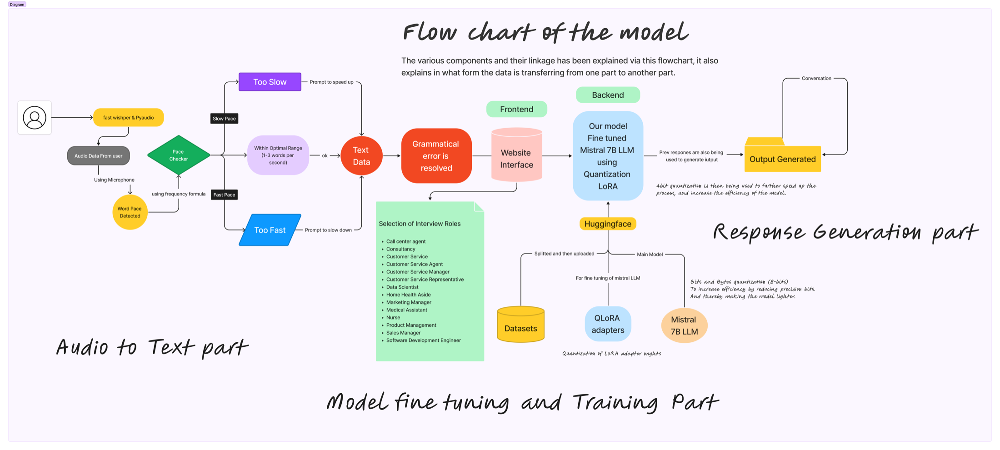

Aman Behera
AI Engineer, independent researcher
HiLabs · Vision and Learning Group, IIT Roorkee
I work on AI agents, reinforcement learning, agentic memory, and document intelligence, combining research with building practical systems. My recent work includes notSoSmartOCR for extracting structured content from complex documents, Lost in Injection for testing whether prompt-injection defenses survive translation, and RDAN-GRPO for instruction following. I work at HiLabs as an AI Engineer and am associated with the Vision and Learning Group at IIT Roorkee.
I graduated from IIT Roorkee in 2026, previously worked on generative engine optimisation at Info Edge, and contributed to GNU Octave through Google Summer of Code. Outside work, I run, swim, and powerlift.
Recent work

- Reading
- AI security, recursive self-improvement and post-training
- Building
- A notSoSmartOCR that is better at the pages it doubts, and LevelHead's next steps
- Learning
- GPU programming with CS193G and PPMP, focused on CUDA
- Happy to talk about agents, post-training, safety evaluations and document AI.
News
- Nov 2026
New on the blog: how notSoSmartOCR learned to say "I'm not sure". The story behind document extraction you can inspect, with the film and animations. Read it.
- Nov 2026
Lost in Injection at the Lexsi AI Safety and Alignment Hackathon. A prompt-injection defense trained only in English holds in 11 languages, and low-resource training halves what still gets through. Blog post and code.
- Oct 2026
Post-Audit Mirage accepted at Who Verifies the Agents? @ NeurIPS 2026. Identifiability limits of offline agent verification, with Payal Payal. Poster. Paper and code.
- Oct 2026
Released LevelHead. Training-free page deskewing and orientation classification for any model, to be submitted to CVPR 2027. Project page and code.
- Sep 2026
Mixing Matters accepted at PriGM @ NeurIPS 2026, Paris. Accepted at the Workshop on Principles of Generative Modeling. A paired study of position bias across Transformer, Mamba, and hybrid language models. Project page, paper, and code.
- Sep 2026
MycoGate-VL accepted at SHROOM-Visions at EMNLP 2026. Multilingual hallucination detection in vision-language responses. Paper and code.
- Aug 2026
Built notSoSmartOCR. Document extraction with layout detection, OCR, selective LLM refinement, and visual evidence for review. Explore the project.
- Jun 2026
Joined HiLabs as a Data Scientist.
- May 2026
GSoC 2026 @ GNU Octave. Contributed to the open-source scientific computing framework.
- Jan 2026
Joined HiLabs as a Data Science Intern.
- Dec 2025
Silver at Inter-IIT Tech Meet 14.0. Led a team of six to a first runner-up finish on the ISRO geospatial VLM problem statement among 24 IITs.
- Sep 2025
Pre-placement offer from HiLabs. Received after winning the HiLabs AIQuest hackathon at IIT Roorkee.
- May 2025
Info Edge · Data Science Intern. Worked on generative engine optimisation (GEO) at Info Edge.
- Dec 2024
Silver at Inter-IIT Tech Meet 2025. Built an AI interview platform.
Research
All researchSafety and alignment


Post-Audit Mirage: Identifiability Limits of Offline Agent Verification
Accepted · Who Verifies the Agents? Workshop at NeurIPS 2026 (Poster)
Safe and harmful agents can leave identical audit records, so offline verification alone cannot tell them apart.

MycoGate-VL
Accepted · SHROOM-Visions at EMNLP 2026
Detects and categorises hallucinated spans in vision-language answers across English, French, Italian and Chinese.
Document intelligence
LevelHead: Deskew Before You Classify
To be submitted · CVPR 2027
Training-free orientation for any model: level the page first, then let a frozen model vote over four quarter turns.
How language models behave

Mixing Matters? Position Bias Across Sequence Mixers
Accepted · PriGM Workshop at NeurIPS 2026, Paris
One answer passage moves through a long context: Pythia favours the opening, Mamba checkpoints do not.
Writing
All postsStories behind the projects, interactive explainers and notes.
notSoSmartOCR: building an OCR that knows when it's wrong
The story behind document extraction you can inspect: why a humble "I'm not sure" became the whole design, told with the film and the animations I made along the way.

FilmWhich way is up? LevelHead in 99 seconds
A short film about a deceptively hard question for document pipelines, and a training-free answer: deskew before you classify.

FilmDoes a prompt-injection defense speak Hindi?
I trained a prompt-injection defense on English and attacked it in ten other languages. It held. Then I found the two places where it doesn't, and what fixes one of them.

What Happens When You Search Like an Indian Shopper
I typed हल्दी, 'rice 1kg' and a pile of typos into Blinkit, Zepto and Instamart, then watched Zomato eat 400 MB of RAM. Findings, guesses, and fixes.

Projects
notSoSmartOCR
Built a document-intelligence product that turns complex scans into structured, reviewable outputs. It combines orientation correction, layout detection, Falcon OCR 1.5, and selective LLM refinement for handwriting and ambiguous regions, and shows page-level evidence, per-block confidence, tables, and Markdown output.

Drishti
A scalable remote-sensing pipeline integrating EarthMind-4B, RemoteSAM, and a BERT classifier for unified satellite-image analysis. DRISHTI stands for Deep Remote-sensing Intelligence System for Holistic Task Integration. Awarded a silver medal at Inter IIT Tech Meet 14.0.

Tech-Enhanced AI Interview Learning Platform
Developed an interview practice platform that generates diverse, topic-specific questions and uses NLP to analyse spoken responses, identify grammatical errors, and provide corrections after the interview.